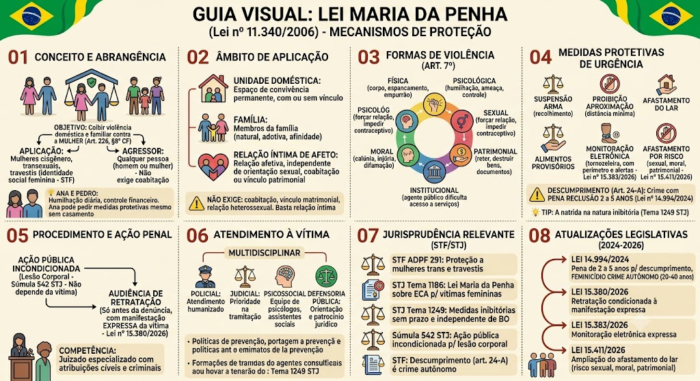

Lei Maria da Penha — Lei 11.340/2006
BR / 2026-10-13 / compilada (texto vigente)
Consultar fonte oficial Baixar cópia local
A redação desta cópia corresponde à versão identificada acima. Consulte a fonte oficial para conferir alterações posteriores e o recorte do seu edital.
Roteiro de leitura
- Formas de violência doméstica
- Atendimento e providências policiais
- Medidas protetivas e disposições processuais
Índice dos 57 dispositivos
Lei nº 11.340 de 07/08/2006
LEI Nº 11.340, DE 7 DE AGOSTO DE 2006
Cria mecanismos para coibir a violência doméstica e familiar contra a mulher, nos termos do § 8º do art. 226 da Constituição Federal, da Convenção sobre a Eliminação de Todas as Formas de Discriminação contra as Mulheres e da Convenção Interamericana para Prevenir, Punir e Erradicar a Violência contra a Mulher; dispõe sobre a criação dos Juizados de Violência Doméstica e Familiar contra a Mulher; altera os Decretos-Lei nºs 3.689, de 3 de outubro de 1941 (Código de Processo Penal), e 2.848, de 7 de dezembro de 1940 (Código Penal), e a Lei nº 7.210, de 11 de julho de 1984 (Lei de Execução Penal); e dá outras providências (Lei Maria da Penha). *(Ementa com redação dada pela Lei nº 15.212, de 19/8/2025)*
O PRESIDENTE DA REPÚBLICA
Faço saber que o Congresso Nacional decreta e eu sanciono a seguinte Lei:
TÍTULO I — DISPOSIÇÕES PRELIMINARES
Art. 1º Esta Lei cria mecanismos para coibir e prevenir a violência doméstica e familiar contra a mulher, nos termos do § 8º do art. 226 da Constituição Federal, da Convenção sobre a Eliminação de Todas as Formas de Violência contra a Mulher, da Convenção Interamericana para Prevenir, Punir e Erradicar a Violência contra a Mulher e de outros tratados internacionais ratificados pela República Federativa do Brasil; dispõe sobre a criação dos Juizados de Violência Doméstica e Familiar contra a Mulher; e estabelece medidas de assistência e proteção às mulheres em situação de violência doméstica e familiar.
Art. 2º Toda mulher, independentemente de classe, raça, etnia, orientação sexual, renda, cultura, nível educacional, idade e religião, goza dos direitos fundamentais inerentes à pessoa humana, sendo-lhe asseguradas as oportunidades e facilidades para viver sem violência, preservar sua saúde física e mental e seu aperfeiçoamento moral, intelectual e social.
Art. 3º Serão asseguradas às mulheres as condições para o exercício efetivo dos direitos à vida, à segurança, à saúde, à alimentação, à educação, à cultura, à moradia, ao acesso à justiça, ao esporte, ao lazer, ao trabalho, à cidadania, à liberdade, à dignidade, ao respeito e à convivência familiar e comunitária.
§ 1º O poder público desenvolverá políticas que visem garantir os direitos humanos das mulheres no âmbito das relações domésticas e familiares no sentido de resguardá-las de toda forma de negligência, discriminação, exploração, violência, crueldade e opressão.
§ 2º Cabe à família, à sociedade e ao poder público criar as condições necessárias para o efetivo exercício dos direitos enunciados no *caput*.
Art. 4º Na interpretação desta Lei serão considerados os fins sociais a que ela se destina e, especialmente, as condições peculiares das mulheres em situação de violência doméstica e familiar.
TÍTULO II — DA VIOLÊNCIA DOMÉSTICA E FAMILIAR CONTRA A MULHER
CAPÍTULO I — DISPOSIÇÕES GERAIS
Art. 5º Para os efeitos desta Lei configura violência doméstica e familiar contra a mulher qualquer ação ou omissão baseada no gênero que lhe cause morte, lesão, sofrimento físico, sexual ou psicológico e dano moral ou patrimonial:
I - no âmbito da unidade doméstica, compreendida como o espaço de convívio permanente de pessoas, com ou sem vínculo familiar, inclusive as esporadicamente agregadas;
II - no âmbito da família, compreendida como a comunidade formada por indivíduos que são ou se consideram aparentados, unidos por laços naturais, por afinidade ou por vontade expressa;
III - em qualquer relação íntima de afeto, na qual o agressor conviva ou tenha convivido com a ofendida, independentemente de coabitação.
Parágrafo único. As relações pessoais enunciadas neste artigo independem de orientação sexual.
Art. 6º A violência doméstica e familiar contra a mulher constitui uma das formas de violação dos direitos humanos.
CAPÍTULO II — DAS FORMAS DE VIOLÊNCIA DOMÉSTICA E FAMILIAR
CONTRA A MULHER
Art. 7º São formas de violência doméstica e familiar contra a mulher, entre outras:
I - a violência física, entendida como qualquer conduta que ofenda sua integridade ou saúde corporal;
II - a violência psicológica, entendida como qualquer conduta que lhe cause dano emocional e diminuição da autoestima ou que lhe prejudique e perturbe o pleno desenvolvimento ou que vise degradar ou controlar suas ações, comportamentos, crenças e decisões, mediante ameaça, constrangimento, humilhação, manipulação, isolamento, vigilância constante, perseguição contumaz, insulto, chantagem, violação de sua intimidade, ridicularização, exploração e limitação do direito de ir e vir ou qualquer outro meio que lhe cause prejuízo à saúde psicológica e à autodeterminação; *(Inciso com redação dada pela Lei nº 13.772, de 19/12/2018)*
III - a violência sexual, entendida como qualquer conduta que a constranja a presenciar, a manter ou a participar de relação sexual não desejada, mediante intimidação, ameaça, coação ou uso da força; que a induza a comercializar ou a utilizar, de qualquer modo, a sua sexualidade, que a impeça de usar qualquer método contraceptivo ou que a force ao matrimônio, à gravidez, ao aborto ou à prostituição, mediante coação, chantagem, suborno ou manipulação; ou que limite ou anule o exercício de seus direitos sexuais e reprodutivos;
IV - a violência patrimonial, entendida como qualquer conduta que configure retenção, subtração, destruição parcial ou total de seus objetos, instrumentos de trabalho, documentos pessoais, bens, valores e direitos ou recursos econômicos, incluindo os destinados a satisfazer suas necessidades;
V - a violência moral, entendida como qualquer conduta que configure calúnia, difamação ou injúria.
VI - a violência vicária, entendida como qualquer forma de violência praticada contra descendente, ascendente, dependente, enteado, parente, pessoa sob guarda ou responsabilidade direta da mulher ou pessoa de sua rede de apoio, com vistas a atingi-la. *(Inciso acrescido pela Lei nº 15.384, de 9/4/2026)*
TÍTULO III — DA ASSISTÊNCIA À MULHER EM SITUAÇÃO DE VIOLÊNCIA DOMÉSTICA E FAMILIAR
CAPÍTULO I — DAS MEDIDAS INTEGRADAS DE PREVENÇÃO
Art. 8º A política pública que visa coibir a violência doméstica e familiar contra a mulher far-se-á por meio de um conjunto articulado de ações da União, dos Estados, do Distrito Federal e dos Municípios e de ações não-governamentais, tendo por diretrizes:
I - a integração operacional do Poder Judiciário, do Ministério Público e da Defensoria Pública com as áreas de segurança pública, assistência social, saúde, educação, trabalho e habitação;
II - a promoção de estudos e pesquisas, estatísticas e outras informações relevantes, com a perspectiva de gênero e de raça ou etnia, concernentes às causas, às consequências e à frequência da violência doméstica e familiar contra a mulher, para a sistematização de dados, a serem unificados nacionalmente, e a avaliação periódica dos resultados das medidas adotadas;
III - o respeito, nos meios de comunicação social, dos valores éticos e sociais da pessoa e da família, de forma a coibir os papéis estereotipados que legitimem ou exacerbem a violência doméstica e familiar, de acordo com o estabelecido no inciso III do art. 1º, no inciso IV do art. 3º e no inciso IV do art. 221 da Constituição Federal;
IV - a implementação de atendimento policial especializado para as mulheres, em particular nas Delegacias de Atendimento à Mulher;
V - a promoção e a realização de campanhas educativas de prevenção da violência doméstica e familiar contra a mulher, voltadas ao público escolar e à sociedade em geral, e a difusão desta Lei e dos instrumentos de proteção aos direitos humanos das mulheres;
VI - a celebração de convênios, protocolos, ajustes, termos ou outros instrumentos de promoção de parceria entre órgãos governamentais ou entre estes e entidades não-governamentais, tendo por objetivo a implementação de programas de erradicação da violência doméstica e familiar contra a mulher;
VII - a capacitação permanente das Polícias Civil e Militar, da Guarda Municipal, do Corpo de Bombeiros e dos profissionais pertencentes aos órgãos e às áreas enunciados no inciso I quanto às questões de gênero e de raça ou etnia;
VIII - a promoção de programas educacionais que disseminem valores éticos de irrestrito respeito à dignidade da pessoa humana com a perspectiva de gênero e de raça ou etnia;
IX - o destaque, nos currículos escolares de todos os níveis de ensino, para os conteúdos relativos aos direitos humanos, à equidade de gênero e de raça ou etnia e ao problema da violência doméstica e familiar contra a mulher.
CAPÍTULO II — DA ASSISTÊNCIA À MULHER EM SITUAÇÃO DE VIOLÊNCIA DOMÉSTICA E FAMILIAR
Art. 9º A assistência à mulher em situação de violência doméstica e familiar será prestada em caráter prioritário no Sistema Único de Saúde (SUS) e no Sistema Único de Segurança Pública (Susp), de forma articulada e conforme os princípios e as diretrizes previstos na Lei nº 8.742, de 7 de dezembro de 1993 (Lei Orgânica da Assistência Social), e em outras normas e políticas públicas de proteção, e emergencialmente, quando for o caso. *(“Caput” do artigo com redação dada pela Lei nº 14.887, de 12/6/2024)*
§ 1º O juiz determinará, por prazo certo, a inclusão da mulher em situação de violência doméstica e familiar no cadastro de programas assistenciais do governo federal, estadual e municipal.
§ 2º O juiz assegurará à mulher em situação de violência doméstica e familiar, para preservar sua integridade física e psicológica:
I - acesso prioritário à remoção quando servidora pública, integrante da administração direta ou indireta;
II - manutenção do vínculo trabalhista, quando necessário o afastamento do local de trabalho, por até seis meses;
III - encaminhamento à assistência judiciária, quando for o caso, inclusive para eventual ajuizamento da ação de separação judicial, de divórcio, de anulação de casamento ou de dissolução de união estável perante o juízo competente. *(Inciso acrescido pela Lei nº 13.894, de 29/10/2019)*
§ 3º A assistência à mulher em situação de violência doméstica e familiar compreenderá o acesso aos benefícios decorrentes do desenvolvimento científico e tecnológico, incluindo os serviços de contracepção de emergência, a profilaxia das Doenças Sexualmente Transmissíveis (DST) e da Síndrome da Imunodeficiência Adquirida (AIDS) e outros procedimentos médicos necessários e cabíveis nos casos de violência sexual.
§ 4º Aquele que, por ação ou omissão, causar lesão, violência física, sexual ou psicológica e dano moral ou patrimonial a mulher fica obrigado a ressarcir todos os danos causados, inclusive ressarcir ao Sistema Único de Saúde (SUS), de acordo com a tabela SUS, os custos relativos aos serviços de saúde prestados para o total tratamento das vítimas em situação de violência doméstica e familiar, recolhidos os recursos assim arrecadados ao Fundo de Saúde do ente federado responsável pelas unidades de saúde que prestarem os serviços. *(Parágrafo acrescido pela Lei nº 13.871, de 17/9/2019, publicada no DOU de 18/9/2019, em vigor 45 dias após a publicação)*
§ 5º Os dispositivos de segurança destinados ao uso em caso de perigo iminente e disponibilizados para o monitoramento das vítimas de violência doméstica ou familiar amparadas por medidas protetivas terão seus custos ressarcidos pelo agressor. *(Parágrafo acrescido pela Lei nº 13.871, de 17/9/2019, publicada no DOU de 18/9/2019, em vigor 45 dias após a publicação)*
§ 6º O ressarcimento de que tratam os §§ 4º e 5º deste artigo não poderá importar ônus de qualquer natureza ao patrimônio da mulher e dos seus dependentes, nem configurar atenuante ou ensejar possibilidade de substituição da pena aplicada. *(Parágrafo acrescido pela Lei nº 13.871, de 17/9/2019, publicada no DOU de 18/9/2019, em vigor 45 dias após a publicação)*
§ 7º A mulher em situação de violência doméstica e familiar tem prioridade para matricular seus dependentes em instituição de educação básica mais próxima de seu domicílio, ou transferi-los para essa instituição, mediante a apresentação dos documentos comprobatórios do registro da ocorrência policial ou do processo de violência doméstica e familiar em curso. *(Parágrafo acrescido pela Lei nº 13.882, de 8/10/2019)*
§ 8º Serão sigilosos os dados da ofendida e de seus dependentes matriculados ou transferidos conforme o disposto no § 7º deste artigo, e o acesso às informações será reservado ao juiz, ao Ministério Público e aos órgãos competentes do poder público. *(Parágrafo acrescido pela Lei nº 13.882, de 8/10/2019 e republicado no DOU de 11/10/2019)*
CAPÍTULO III — DO ATENDIMENTO PELA AUTORIDADE POLICIAL
Art. 10. Na hipótese da iminência ou da prática de violência doméstica e familiar contra a mulher, à autoridade policial que tomar conhecimento da ocorrência adotará, de imediato, as providências legais cabíveis.
Parágrafo único. Aplica-se o disposto no *caput* deste artigo ao descumprimento de medida protetiva de urgência deferida.
Art. 10-A. É direito da mulher em situação de violência doméstica e familiar o atendimento policial e pericial especializado, ininterrupto e prestado por servidores - preferencialmente do sexo feminino - previamente capacitados.
§ 1º A inquirição de mulher em situação de violência doméstica e familiar ou de testemunha de violência doméstica, quando se tratar de crime contra a mulher, obedecerá às seguintes diretrizes:
I - salvaguarda da integridade física, psíquica e emocional da depoente, considerada a sua condição peculiar de pessoa em situação de violência doméstica e familiar;
II - garantia de que, em nenhuma hipótese, a mulher em situação de violência doméstica e familiar, familiares e testemunhas terão contato direto com investigados ou suspeitos e pessoas a eles relacionadas;
III - não revitimização da depoente, evitando sucessivas inquirições sobre o mesmo fato nos âmbitos criminal, cível e administrativo, bem como questionamentos sobre a vida privada.
§ 2º Na inquirição de mulher em situação de violência doméstica e familiar ou de testemunha de delitos de que trata esta Lei, adotar-se-á, preferencialmente, o seguinte procedimento:
I - a inquirição será feita em recinto especialmente projetado para esse fim, o qual conterá os equipamentos próprios e adequados à idade da mulher em situação de violência doméstica e familiar ou testemunha e ao tipo e à gravidade da violência sofrida;
II - quando for o caso, a inquirição será intermediada por profissional especializado em violência doméstica e familiar designado pela autoridade judiciária ou policial;
III - o depoimento será registrado em meio eletrônico ou magnético, devendo a degravação e a mídia integrar o inquérito. *(Artigo acrescido pela Lei nº 13.505, de 8/11/2017)*
Art. 11. No atendimento à mulher em situação de violência doméstica e familiar, a autoridade policial deverá, entre outras providências:
I - garantir proteção policial, quando necessário, comunicando de imediato ao Ministério Público e ao Poder Judiciário;
II - encaminhar a ofendida ao hospital ou posto de saúde e ao Instituto Médico Legal;
III - fornecer transporte para a ofendida e seus dependentes para abrigo ou local seguro, quando houver risco de vida;
IV - se necessário, acompanhar a ofendida para assegurar a retirada de seus pertences do local da ocorrência ou do domicílio familiar;
V - informar à ofendida os direitos a ela conferidos nesta Lei e os serviços disponíveis, inclusive os de assistência judiciária para o eventual ajuizamento perante o juízo competente da ação de separação judicial, de divórcio, de anulação de casamento ou de dissolução de união estável. *(Inciso com redação dada pela Lei nº 13.894, de 29/10/2019)*
Parágrafo único. Verificados indícios de redução a condição análoga à de escravo ou outra forma de violência doméstica contra a trabalhadora doméstica, a autoridade policial que tomar conhecimento da ocorrência deverá comunicá-la, em até 48 (quarenta e oito) horas, à unidade regional do Ministério do Trabalho e Emprego e ao Ministério Público do Trabalho. *(Parágrafo único acrescido pela Lei nº 15.455, de 1º/7/2026)*
Art. 12. Em todos os casos de violência doméstica e familiar contra a mulher, feito o registro da ocorrência, deverá a autoridade policial adotar, de imediato, os seguintes procedimentos, sem prejuízo daqueles previstos no Código de Processo Penal:
I - ouvir a ofendida, lavrar o boletim de ocorrência e tomar a representação a termo, se apresentada; *(Vide ADIN nº 4.424/2010, publicada no DOU de 17/2/2012)*
II - colher todas as provas que servirem para o esclarecimento do fato e de suas circunstâncias;
III - remeter, no prazo de 48 (quarenta e oito) horas, expediente apartado ao juiz com o pedido da ofendida, para a concessão de medidas protetivas de urgência;
IV - determinar que se proceda ao exame de corpo de delito da ofendida e requisitar outros exames periciais necessários;
V - ouvir o agressor e as testemunhas;
VI - ordenar a identificação do agressor e fazer juntar aos autos sua folha de antecedentes criminais, indicando a existência de mandado de prisão ou registro de outras ocorrências policiais contra ele;
VI-A - verificar se o agressor possui registro de porte ou posse de arma de fogo e, na hipótese de existência, juntar aos autos essa informação, bem como notificar a ocorrência à instituição responsável pela concessão do registro ou da emissão do porte, nos termos da Lei nº 10.826, de 22 de dezembro de 2003 (Estatuto do Desarmamento); *(Inciso acrescido pela Lei nº 13.880, de 8/10/2019)*
VII - remeter, no prazo legal, os autos do inquérito policial ao juiz e ao Ministério Público.
§ 1º O pedido da ofendida será tomado a termo pela autoridade policial e deverá conter:
I - qualificação da ofendida e do agressor;
II - nome e idade dos dependentes;
III - descrição sucinta do fato e das medidas protetivas solicitadas pela ofendida;
IV - informação sobre a condição de a ofendida ser pessoa com deficiência e se da violência sofrida resultou deficiência ou agravamento de deficiência preexistente. *(Inciso acrescido pela Lei nº 13.836, de 4/6/2019)*
§ 2º A autoridade policial deverá anexar ao documento referido no § 1º o boletim de ocorrência e cópia de todos os documentos disponíveis em posse da ofendida.
§ 3º Serão admitidos como meios de prova os laudos ou prontuários médicos fornecidos por hospitais e postos de saúde.
Art. 12-A. Os Estados e o Distrito Federal, na formulação de suas políticas e planos de atendimento à mulher em situação de violência doméstica e familiar, darão prioridade, no âmbito da Polícia Civil, à criação de Delegacias Especializadas de Atendimento à Mulher (Deams), de Núcleos Investigativos de Feminicídio e de equipes especializadas para o atendimento e a investigação das violências graves contra a mulher. *(Artigo acrescido pela Lei nº 13.505, de 8/11/2017)*
Art. 12-B. *(VETADO na Lei nº 13.505, de 8/11/2017)*
§ 1º *(VETADO na Lei nº 13.505, de 8/11/2017)*
§ 2º *(VETADO na Lei nº 13.505, de 8/11/2017)*
§ 3º A autoridade policial poderá requisitar os serviços públicos necessários à defesa da mulher em situação de violência doméstica e familiar e de seus dependentes. *(Parágrafo acrescido pela Lei nº 13.505, de 8/11/2017)*
Art. 12-C. Verificada a existência de risco atual ou iminente à vida ou à integridade física, sexual, psicológica, moral ou patrimonial da mulher em situação de violência doméstica e familiar, ou de seus dependentes, o agressor será imediatamente afastado do lar, domicílio ou local de convivência com a ofendida: *(“Caput” do artigo acrescido pela Lei nº 13.827, de 13/5/2019, e com redação dada pela Lei nº 15.411, de 20/5/2026)*
I - pela autoridade judicial; *(Inciso acrescido pela Lei nº 13.827, de 13/5/2019)*
II - pelo delegado de polícia, quando o Município não for sede de comarca; ou *(Inciso acrescido pela Lei nº 13.827, de 13/5/2019)*
III - pelo policial, quando o Município não for sede de comarca e não houver delegado disponível no momento da denúncia. *(Inciso acrescido pela Lei nº 13.827, de 13/5/2019)*
§ 1º Nas hipóteses dos incisos II e III do *caput* deste artigo, o juiz será comunicado no prazo máximo de 24 (vinte e quatro) horas e decidirá, em igual prazo, sobre a manutenção ou a revogação da medida aplicada, devendo dar ciência ao Ministério Público concomitantemente. *(Parágrafo acrescido pela Lei nº 13.827, de 13/5/2019)*
§ 2º Nos casos de risco à integridade física da ofendida ou à efetividade da medida protetiva de urgência, não será concedida liberdade provisória ao preso. *(Parágrafo acrescido pela Lei nº 13.827, de 13/5/2019)*
Art. 12-D. Verificada a existência de risco atual ou iminente à vida ou à integridade física ou psicológica da mulher em situação de violência doméstica e familiar, ou de seus dependentes, o agressor será imediatamente submetido à monitoração eletrônica:
I - pela autoridade judicial;
II - pelo delegado de polícia, quando o Município não for sede de comarca.
Parágrafo único. Na hipótese do inciso II do *caput* deste artigo, o juiz será comunicado no prazo máximo de 24 (vinte e quatro) horas e decidirá, em igual prazo, sobre a manutenção ou a revogação da medida aplicada, devendo dar ciência ao Ministério Público concomitantemente. *(Artigo acrescido pela Lei nº 15.383, de 9/4/2026)*
TÍTULO IV — DOS PROCEDIMENTOS
CAPÍTULO I — DISPOSIÇÕES GERAIS
Art. 13. Ao processo, ao julgamento e à execução das causas cíveis e criminais decorrentes da prática de violência doméstica e familiar contra a mulher aplicar-se-ão as normas dos Códigos de Processo Penal e Processo Civil e da legislação específica relativa à criança, ao adolescente e ao idoso que não conflitarem com o estabelecido nesta Lei.
Art. 14. Os Juizados de Violência Doméstica e Familiar contra a Mulher, órgãos da Justiça Ordinária com competência cível e criminal, poderão ser criados pela União, no Distrito Federal e nos Territórios, e pelos Estados, para o processo, o julgamento e a execução das causas decorrentes da prática de violência doméstica e familiar contra a mulher.
Parágrafo único. Os atos processuais poderão realizar-se em horário noturno, conforme dispuserem as normas de organização judiciária.
Art. 14-A. A ofendida tem a opção de propor ação de divórcio ou de dissolução de união estável no Juizado de Violência Doméstica e Familiar contra a Mulher.
§ 1º Exclui-se da competência dos Juizados de Violência Doméstica e Familiar contra a Mulher a pretensão relacionada à partilha de bens.
§ 2º Iniciada a situação de violência doméstica e familiar após o ajuizamento da ação de divórcio ou de dissolução de união estável, a ação terá preferência no juízo onde estiver. *(Artigo acrescido pela Lei nº 13.894, de 29/10/2019, vetado pelo Presidente da República, mantido pelo Congresso Nacional e publicado no DOU de 11/12/2019)*
Art. 15. É competente, por opção da ofendida, para os processos cíveis regidos por esta Lei, o Juizado:
I - do seu domicílio ou de sua residência;
II - do lugar do fato em que se baseou a demanda;
III - do domicílio do agressor.
Art. 16. Nas ações penais públicas condicionadas à representação da ofendida de que trata esta Lei, só será admitida a renúncia à representação perante o juiz, em audiência especialmente designada com tal finalidade, antes do recebimento da denúncia e ouvido o Ministério Público. *(Vide ADIN nº 4.424/2010, publicada no DOU de 17/2/2012) (Vide ADI nº 7.267/2022, publicada no DOU de 4/9/2023)*
Parágrafo único. A audiência prevista no *caput* deste artigo tem por objetivo confirmar a retratação da vítima, não a representação, e somente será designada pelo juiz mediante manifestação expressa de seu desejo de se retratar, apresentada por escrito ou oralmente antes do recebimento da denúncia, devendo a retratação ser devidamente registrada nos autos. *(Parágrafo único acrescido pela Lei nº 15.380, de 6/4/2026)*
Art. 16-A. Nos crimes praticados no âmbito de violência doméstica e familiar contra a mulher, a ofendida decai do direito de queixa ou de representação se não o exerce no prazo de 12 (doze) meses, contado do dia em que veio a saber quem é o autor do crime, ou, no caso do § 3º do art. 100 do Decreto-Lei nº 2.848, de 7 de dezembro de 1940 (Código Penal), do dia em que se esgota o prazo para oferecimento da denúncia. *(Artigo acrescido pela Lei nº 15.438, de 18/6/2026)*
Art. 17. É vedada a aplicação, nos casos de violência doméstica e familiar contra a mulher, de penas de cesta básica ou outras de prestação pecuniária, bem como a substituição de pena que implique o pagamento isolado de multa.
Art. 17-A. O nome da ofendida ficará sob sigilo nos processos em que se apuram crimes praticados no contexto de violência doméstica e familiar contra a mulher.
Parágrafo único. O sigilo referido no *caput* deste artigo não abrange o nome do autor do fato, tampouco os demais dados do processo. *(Artigo acrescido pela Lei nº 14.857, de 21/5/2024, publicada no DOU de 22/5/2024, em vigor 180 dias após a publicação)*
CAPÍTULO II — DAS MEDIDAS PROTETIVAS DE URGÊNCIA
Seção I — Disposições Gerais
Art. 18. Recebido o expediente com o pedido da ofendida, caberá ao juiz, no prazo de 48 (quarenta e oito) horas:
I - conhecer do expediente e do pedido e decidir sobre as medidas protetivas de urgência;
II - determinar o encaminhamento da ofendida ao órgão de assistência judiciária, quando for o caso, inclusive para o ajuizamento da ação de separação judicial, de divórcio, de anulação de casamento ou de dissolução de união estável perante o juízo competente; *(Inciso com redação dada pela Lei nº 13.894, de 29/10/2019)*
III - comunicar ao Ministério Público para que adote as providências cabíveis;
IV - determinar a apreensão imediata de arma de fogo sob a posse do agressor. *(Inciso acrescido pela Lei nº 13.880, de 8/10/2019)*
Art. 19. As medidas protetivas de urgência poderão ser concedidas pelo juiz, a requerimento do Ministério Público ou a pedido da ofendida.
§ 1º As medidas protetivas de urgência poderão ser concedidas de imediato, independentemente de audiência das partes e de manifestação do Ministério Público, devendo este ser prontamente comunicado.
§ 2º As medidas protetivas de urgência serão aplicadas isolada ou cumulativamente, e poderão ser substituídas a qualquer tempo por outras de maior eficácia, sempre que os direitos reconhecidos nesta Lei forem ameaçados ou violados.
§ 3º Poderá o juiz, a requerimento do Ministério Público ou a pedido da ofendida, conceder novas medidas protetivas de urgência ou rever aquelas já concedidas, se entender necessário à proteção da ofendida, de seus familiares e de seu patrimônio, ouvido o Ministério Público.
§ 4º As medidas protetivas de urgência serão concedidas em juízo de cognição sumária a partir do depoimento da ofendida perante a autoridade policial ou da apresentação de suas alegações escritas e poderão ser indeferidas no caso de avaliação pela autoridade de inexistência de risco à integridade física, psicológica, sexual, patrimonial ou moral da ofendida ou de seus dependentes. *(Parágrafo acrescido pela Lei nº 14.550, de 19/4/2023)*
§ 5º As medidas protetivas de urgência serão concedidas independentemente da tipificação penal da violência, do ajuizamento de ação penal ou cível, da existência de inquérito policial ou do registro de boletim de ocorrência. *(Parágrafo acrescido pela Lei nº 14.550, de 19/4/2023)*
§ 6º As medidas protetivas de urgência vigorarão enquanto persistir risco à integridade física, psicológica, sexual, patrimonial ou moral da ofendida ou de seus dependentes. *(Parágrafo acrescido pela Lei nº 14.550, de 19/4/2023)*
Art. 20. Em qualquer fase do inquérito policial ou da instrução criminal, caberá a prisão preventiva do agressor, decretada pelo juiz, de ofício, a requerimento do Ministério Público ou mediante representação da autoridade policial.
Parágrafo único. O juiz poderá revogar a prisão preventiva se, no curso do processo, verificar a falta de motivo para que subsista, bem como de novo decretá-la, se sobrevierem razões que a justifiquem.
Art. 21. A ofendida deverá ser notificada dos atos processuais relativos ao agressor, especialmente dos pertinentes ao ingresso e à saída da prisão, sem prejuízo da intimação do advogado constituído ou do defensor público.
Parágrafo único. A ofendida não poderá entregar intimação ou notificação ao agressor.
Seção II — Das Medidas Protetivas de Urgência que Obrigam o Agressor
Art. 22. Constatada a prática de violência doméstica e familiar contra a mulher, nos termos desta Lei, o juiz poderá aplicar, de imediato, ao agressor, em conjunto ou separadamente, as seguintes medidas protetivas de urgência, entre outras:
I - suspensão da posse ou restrição do porte de armas, com comunicação ao órgão competente, nos termos da Lei nº 10.826, de 22 de dezembro de 2003;
II - afastamento do lar, domicílio ou local de convivência com a ofendida;
III - proibição de determinadas condutas, entre as quais:
a) aproximação da ofendida, de seus familiares e das testemunhas, fixando o limite mínimo de distância entre estes e o agressor;
b) contato com a ofendida, seus familiares e testemunhas por qualquer meio de comunicação;
c) frequentação de determinados lugares a fim de preservar a integridade física e psicológica da ofendida;
IV - restrição ou suspensão de visitas aos dependentes menores, ouvida a equipe de atendimento multidisciplinar ou serviço similar;
V - prestação de alimentos provisionais ou provisórios;
VI - comparecimento do agressor a programas de recuperação e reeducação; e *(Inciso acrescido pela Lei nº 13.984, de 3/4/2020)*
VII - acompanhamento psicossocial do agressor, por meio de atendimento individual e/ou em grupo de apoio. *(Inciso acrescido pela Lei nº 13.984, de 3/4/2020)*
VIII - monitoração eletrônica, disponibilizando-se à vítima aplicação ou dispositivo de segurança que alerte sobre eventual aproximação do agressor. *(Inciso acrescido pela Lei nº 15.383, de 9/4/2026)*
§ 1º As medidas referidas neste artigo não impedem a aplicação de outras previstas na legislação em vigor, sempre que a segurança da ofendida ou as circunstâncias o exigirem, devendo a providência ser comunicada ao Ministério Público.
§ 2º Na hipótese de aplicação do inciso I, encontrando-se o agressor nas condições mencionadas no *caput* e incisos do art. 6º da Lei nº 10.826, de 22 de dezembro de 2003, o juiz comunicará ao respectivo órgão, corporação ou instituição as medidas protetivas de urgência concedidas e determinará a restrição do porte de armas, ficando o superior imediato do agressor responsável pelo cumprimento da determinação judicial, sob pena de incorrer nos crimes de prevaricação ou de desobediência, conforme o caso.
§ 3º Para garantir a efetividade das medidas protetivas de urgência, poderá o juiz requisitar, a qualquer momento, auxílio da força policial.
§ 4º Na aplicação das medidas protetivas de urgência, o juiz concederá a tutela específica ou determinará providências que assegurem a obtenção de tutela pelo resultado prático equivalente. *(Parágrafo com redação dada pela Lei nº 15.412, de 20/5/2026)*
§ 5º *(Parágrafo acrescido pela Lei nº 15.125, de 24/4/2025,* *e revogado pela Lei nº 15.383, de 9/4/2026)*
§ 6º A aplicação da medida prevista no inciso VIII do *caput* deste artigo terá prioridade nos casos em que houver descumprimento de medidas protetivas anteriormente impostas ou quando for verificado risco iminente à integridade física ou psicológica da vítima. *(Parágrafo acrescido pela Lei nº 15.383, de 9/4/2026)*
§ 7º Para a efetivação da medida prevista no inciso VIII do *caput* deste artigo, a autoridade competente promoverá a instalação do equipamento e instruirá o agressor sobre o seu funcionamento e as áreas de exclusão onde não poderá circular, conforme definido na decisão da autoridade judicial, devendo a ciência constar de termo nos autos. *(Parágrafo acrescido pela Lei nº 15.383, de 9/4/2026)*
§ 8º O sistema de monitoração eletrônica de que trata o inciso VIII do *caput* deste artigo deverá emitir alerta automático e simultâneo à vítima e à unidade policial mais próxima sempre que o agressor romper o perímetro de exclusão fixado judicialmente. *(Parágrafo acrescido pela Lei nº 15.383, de 9/4/2026)*
§ 9º Nos casos previstos no § 6º deste artigo, a decisão judicial que deixar de aplicar a medida protetiva de monitoração eletrônica deverá apresentar fundamentação expressa quanto às razões da não aplicação da medida. *(Parágrafo acrescido pela Lei nº 15.383, de 9/4/2026)*
§ 10 As medidas protetivas de natureza cível, inclusive as de prestação de alimentos provisionais ou provisórios, constituem título executivo judicial de pleno direito, dispensando a propositura de ação principal. *(Parágrafo acrescido pela Lei nº 15.412, de 20/5/2026)*
Seção III — Das Medidas Protetivas de Urgência à Ofendida
Art. 23. Poderá o juiz, quando necessário, sem prejuízo de outras medidas:
I - encaminhar a ofendida e seus dependentes a programa oficial ou comunitário de proteção ou de atendimento;
II - determinar a recondução da ofendida e a de seus dependentes ao respectivo domicílio, após afastamento do agressor;
III - determinar o afastamento da ofendida do lar, sem prejuízo dos direitos relativos a bens, guarda dos filhos e alimentos;
IV - determinar a separação de corpos;
V - determinar a matrícula dos dependentes da ofendida em instituição de educação básica mais próxima do seu domicílio, ou a transferência deles para essa instituição, independentemente da existência de vaga; *(Inciso acrescido pela Lei nº 13.882, de 8/10/2019)*
VI - conceder à ofendida auxílio-aluguel, com valor fixado em função de sua situação de vulnerabilidade social e econômica, por período não superior a 6 (seis) meses. *(Inciso acrescido pela Lei nº 14.674, de 14/9/2023)*
Art. 24. Para a proteção patrimonial dos bens da sociedade conjugal ou daqueles de propriedade particular da mulher, o juiz poderá determinar, liminarmente, as seguintes medidas, entre outras:
I - restituição de bens indevidamente subtraídos pelo agressor à ofendida;
II - proibição temporária para a celebração de atos e contratos de compra, venda e locação de propriedade em comum, salvo expressa autorização judicial;
III - suspensão das procurações conferidas pela ofendida ao agressor;
IV - prestação de caução provisória, mediante depósito judicial, por perdas e danos materiais decorrentes da prática de violência doméstica e familiar contra a ofendida.
Parágrafo único. Deverá o juiz oficiar ao cartório competente para os fins previstos nos incisos II e III deste artigo.
Seção IV — Do Crime de Descumprimento de Medidas Protetivas de Urgência
*(Seção acrescida pela Lei nº 13.641, de 3/4/2018)*
Descumprimento de Medidas Protetivas de Urgência
Art. 24-A. Descumprir decisão judicial que defere medidas protetivas de urgência previstas nesta Lei: *(“Caput” do artigo acrescido pela Lei nº 13.641, de 3/4/2018)*
Pena - reclusão, de 2 (dois) a 5 (cinco) anos, e multa. *(Pena acrescida pela Lei nº 13.641, de 3/4/2018, e com redação dada pela Lei nº 14.994, de 9/10/2024)*
§ 1º A configuração do crime independe da competência civil ou criminal do juiz que deferiu as medidas. *(Parágrafo acrescido pela Lei nº 13.641, de 3/4/2018)*
§ 2º Na hipótese de prisão em flagrante, apenas a autoridade judicial poderá conceder fiança. *(Parágrafo acrescido pela Lei nº 13.641, de 3/4/2018)*
§ 3º O disposto neste artigo não exclui a aplicação de outras sanções cabíveis. *(Parágrafo acrescido pela Lei nº 13.641, de 3/4/2018)*
§ 4º A pena será aumentada de 1/3 (um terço) até a metade se o descumprimento decorrer da violação das áreas de exclusão monitoradas eletronicamente ou da remoção, violação ou alteração do dispositivo de monitoração sem autorização judicial. *(Parágrafo acrescido pela Lei nº 15.383, de 9/4/2026)*
CAPÍTULO III — DA ATUAÇÃO DO MINISTÉRIO PÚBLICO
Art. 25. O Ministério Público intervirá, quando não for parte, nas causas cíveis e criminais decorrentes da violência doméstica e familiar contra a mulher.
Art. 26. Caberá ao Ministério Público, sem prejuízo de outras atribuições, nos casos de violência doméstica e familiar contra a mulher, quando necessário:
I - requisitar força policial e serviços públicos de saúde, de educação, de assistência social e de segurança, entre outros;
II - fiscalizar os estabelecimentos públicos e particulares de atendimento à mulher em situação de violência doméstica e familiar, e adotar, de imediato, as medidas administrativas ou judiciais cabíveis no tocante a quaisquer irregularidades constatadas;
III - cadastrar os casos de violência doméstica e familiar contra a mulher.
CAPÍTULO IV — DA ASSISTÊNCIA JUDICIÁRIA
Art. 27. Em todos os atos processuais, cíveis e criminais, a mulher em situação de violência doméstica e familiar deverá estar acompanhada de advogado, ressalvado o previsto no art. 19 desta Lei.
Art. 28. É garantido a toda mulher em situação de violência doméstica e familiar o acesso aos serviços de Defensoria Pública ou de Assistência Judiciária Gratuita, nos termos da lei, em sede policial e judicial, mediante atendimento específico e humanizado.
TÍTULO V — DA EQUIPE DE ATENDIMENTO MULTIDISCIPLINAR
Art. 29. Os Juizados de Violência Doméstica e Familiar contra a Mulher que vierem a ser criados poderão contar com uma equipe de atendimento multidisciplinar, a ser integrada por profissionais especializados nas áreas psicossocial, jurídica e de saúde.
Art. 30. Compete à equipe de atendimento multidisciplinar, entre outras atribuições que lhe forem reservadas pela legislação local, fornecer subsídios por escrito ao juiz, ao Ministério Público e à Defensoria Pública, mediante laudos ou verbalmente em audiência, e desenvolver trabalhos de orientação, encaminhamento, prevenção e outras medidas, voltados para a ofendida, o agressor e os familiares, com especial atenção às crianças e aos adolescentes.
Art. 31. Quando a complexidade do caso exigir avaliação mais aprofundada, o juiz poderá determinar a manifestação de profissional especializado, mediante a indicação da equipe de atendimento multidisciplinar.
Art. 32. O Poder Judiciário, na elaboração de sua proposta orçamentária, poderá prever recursos para a criação e manutenção da equipe de atendimento multidisciplinar, nos termos da Lei de Diretrizes Orçamentárias.
TÍTULO VI — DISPOSIÇÕES TRANSITÓRIAS
Art. 33. Enquanto não estruturados os Juizados de Violência Doméstica e Familiar contra a Mulher, as varas criminais acumularão as competências cível e criminal para conhecer e julgar as causas decorrentes da prática de violência doméstica e familiar contra a mulher, observadas as previsões do Título IV desta Lei, subsidiada pela legislação processual pertinente.
Parágrafo único. Será garantido o direito de preferência, nas varas criminais, para o processo e o julgamento das causas referidas no *caput*.
TÍTULO VII — DISPOSIÇÕES FINAIS
Art. 34. A instituição dos Juizados de Violência Doméstica e Familiar contra a Mulher poderá ser acompanhada pela implantação das curadorias necessárias e do serviço de assistência judiciária.
Art. 35. A União, o Distrito Federal, os Estados e os Municípios poderão criar e promover, no limite das respectivas competências:
I - centros de atendimento integral e multidisciplinar para mulheres e respectivos dependentes em situação de violência doméstica e familiar;
II - casas-abrigos para mulheres e respectivos dependentes menores em situação de violência doméstica e familiar;
III - delegacias, núcleos de defensoria pública, serviços de saúde e centros de perícia médico-legal especializados no atendimento à mulher em situação de violência doméstica e familiar;
IV - programas e campanhas de enfrentamento da violência doméstica e familiar;
V - centros de educação e de reabilitação para os agressores.
Parágrafo único. As campanhas a que se refere o inciso IV do *caput* deste artigo deverão contemplar informações sobre procedimentos e abordagens policiais, prevenção à revitimização, funcionamento das medidas protetivas de urgência e mecanismos de monitoração eletrônica. *(Parágrafo único acrescido pela Lei nº 15.383, de 9/4/2026)*
Art. 36. A União, os Estados, o Distrito Federal e os Municípios promoverão a adaptação de seus órgãos e de seus programas às diretrizes e aos princípios desta Lei.
Art. 37. A defesa dos interesses e direitos transindividuais previstos nesta Lei poderá ser exercida, concorrentemente, pelo Ministério Público e por associação de atuação na área, regularmente constituída há pelo menos um ano, nos termos da legislação civil.
Parágrafo único. O requisito da pré-constituição poderá ser dispensado pelo juiz quando entender que não há outra entidade com representatividade adequada para o ajuizamento da demanda coletiva.
Art. 38. As estatísticas sobre a violência doméstica e familiar contra a mulher serão incluídas nas bases de dados dos órgãos oficiais do Sistema de Justiça e Segurança a fim de subsidiar o sistema nacional de dados e informações relativo às mulheres.
Parágrafo único. As Secretarias de Segurança Pública dos Estados e do Distrito Federal poderão remeter suas informações criminais para a base de dados do Ministério da Justiça.
Art. 38-A. O juiz competente providenciará o registro da medida protetiva de urgência. *(“Caput” do artigo acrescido pela Lei nº 13.827, de 13/5/2019)*
Parágrafo único. As medidas protetivas de urgência serão, após sua concessão, imediatamente registradas em banco de dados mantido e regulamentado pelo Conselho Nacional de Justiça, garantido o acesso instantâneo do Ministério Público, da Defensoria Pública e dos órgãos de segurança pública e de assistência social, com vistas à fiscalização e à efetividade das medidas protetivas. *(Parágrafo único acrescido pela Lei nº 13.827, de 13/5/2019, com redação dada pela Lei nº 14.310, de 8/3/2022, publicada no DOU de 9/3/2022, em vigor 90 dias após a publicação)*
Art. 39. A União, os Estados, o Distrito Federal e os Municípios, no limite de suas competências e nos termos das respectivas leis de diretrizes orçamentárias, poderão estabelecer dotações orçamentárias específicas, em cada exercício financeiro, para a implementação das medidas estabelecidas nesta Lei.
Parágrafo único. Na implementação das medidas estabelecidas nesta Lei, os entes federativos deverão observar, entre as prioridades de alocação de recursos, a aquisição e a manutenção de equipamentos de monitoração eletrônica para agressores e de dispositivos de segurança para as vítimas. *(Parágrafo único acrescido pela Lei nº 15.383, de 9/4/2026)*
Art. 40. As obrigações previstas nesta Lei não excluem outras decorrentes dos princípios por ela adotados.
Art. 40-A. Esta Lei será aplicada a todas as situações previstas no seu art. 5º, independentemente da causa ou da motivação dos atos de violência e da condição do ofensor ou da ofendida. *(Artigo acrescido pela Lei nº 14.550, de 19/4/2023)*
Art. 41. Aos crimes praticados com violência doméstica e familiar contra a mulher, independentemente da pena prevista, não se aplica a Lei nº 9.099, de 26 de setembro de 1995.
Art. 42. O art. 313 do Decreto-Lei nº 3.689, de 3 de outubro de 1941 (Código de Processo Penal), passa a vigorar acrescido do seguinte inciso IV:
"Art. 313. .................................................................................
..................................................................................................
IV - se o crime envolver violência doméstica e familiar contra a mulher, nos termos da lei específica, para garantir a execução das medidas protetivas de urgência." (NR)
Art. 43. A alínea *f* do inciso II do art. 61 do Decreto-Lei nº 2.848, de 7 de dezembro de 1940 (Código Penal), passa a vigorar com a seguinte redação:
"Art. 61. ....................................................................................
..................................................................................................
II - ............................................................................................
..................................................................................................
f) com abuso de autoridade ou prevalecendo-se de relações domésticas, de coabitação ou de hospitalidade, ou com violência contra a mulher na forma da lei específica;
.................................................................................. " (NR)
Art. 44. O art. 129 do Decreto-Lei nº 2.848, de 7 de dezembro de 1940 (Código Penal), passa a vigorar com as seguintes alterações:
"Art. 129. ..................................................................................
..................................................................................................
§ 9º Se a lesão for praticada contra ascendente, descendente, irmão, cônjuge ou companheiro, ou com quem conviva ou tenha convivido, ou, ainda, prevalecendo-se o agente das relações domésticas, de coabitação ou de hospitalidade:
Pena - detenção, de 3 (três) meses a 3 (três) anos.
...................................................................................................
§ 11. Na hipótese do § 9º deste artigo, a pena será aumentada de um terço se o crime for cometido contra pessoa portadora de deficiência." (NR)
Art. 45. O art. 152 da Lei nº 7.210, de 11 de julho de 1984 (Lei de Execução Penal), passa a vigorar com a seguinte redação:
"Art. 152. .................................................................................
Parágrafo único. Nos casos de violência doméstica contra a mulher, o juiz poderá determinar o comparecimento obrigatório do agressor a programas de recuperação e reeducação." (NR)
Art. 46. Esta Lei entra em vigor 45 (quarenta e cinco) dias após sua publicação.
Brasília, 7 de agosto de 2006; 185º da Independência e 118º da República.
LUIZ INÁCIO LULA DA SILVA
Dilma Rousseff
Material de estudo: Lei Maria da Penha
Material complementar · Ver fonte no GitHub
Conceito e Abrangência
O que é a Lei Maria da Penha
A Lei nº 11.340/2006 protege mulheres contra qualquer tipo de violência no âmbito doméstico, familiar ou de relações íntimas de afeto. Não exige coabitação nem vínculo matrimonial. Aplica-se a mulheres cisgênero, transexuais e travestis com identidade social feminina, conforme entendimento do STF.
Situação prática
Ana mora com o namorado Pedro, que a humilha diariamente e controla o dinheiro dela. Ana pode solicitar medidas protetivas, pois a lei protege mulheres em relacionamentos de afeto, mesmo sem casamento ou coabitação.
Quem pode ser agressor?
O sujeito ativo pode ser qualquer pessoa, independentemente do gênero (homem ou mulher), desde que a violência seja praticada contra a mulher no âmbito da relação doméstica, familiar ou de afeto. Exemplos: irmão agredindo irmã, sogra agredindo nora, companheira agredindo companheira em relação homoafetiva.
Âmbito de Aplicação
Quando a lei se aplica
A lei se aplica nas seguintes hipóteses:
- Violência doméstica: ocorrida em unidade doméstica (espaço de convivência permanente, mesmo que sem vínculo familiar).
- Violência familiar: ocorrida entre membros da família (natural, adotiva, ou por afinidade).
- Violência em relação íntima de afeto: independentemente de orientação sexual, coabitação ou vínculo patrimonial.
Dica importante
A lei não exige coabitação, vínculo matrimonial nem relação heterossexual. Basta a existência de relação íntima de afeto.
STJ — Tema 1186
A Lei Maria da Penha prevalece sobre o Estatuto da Criança e do Adolescente (ECA). Se a vítima for do sexo feminino e sofrer violência doméstica/familiar, aplica-se a lei especializada, independentemente de idade (mesmo que menor de idade).
Formas de Violência (Art. 7º)
Tipos de violência
A lei reconhece seis formas de violência:
- Física: ofensa à integridade corporal (espancamento, empurrões, etc.).
- Psicológica: humilhação, ameaça, isolamento, controle excessivo, perseguição.
- Sexual: forçar relação sexual, impedir uso de contraceptivo, obrigar a práticas sexuais não desejadas.
- Patrimonial: destruir, reter, subtrair ou danificar bens, documentos ou instrumentos de trabalho.
- Moral: calúnia, injúria ou difamação contra a mulher.
- Institucional: ação ou omissão de agente público que dificulte ou impeça o acesso a serviços públicos essenciais (saúde, segurança, assistência social).
Memorização
📌 Lembre-se das 6 formas: Física, Psicológica, Sexual, Patrimonial, Moral e Institucional.
📌 A violência institucional foi incluída por atualização legislativa recente.
Medidas Protetivas de Urgência (Arts. 22 a 24)
Medidas protetivas
O juiz pode determinar, de imediato, as seguintes medidas (Art. 22):
- Suspensão do porte de arma do agressor (com recolhimento da arma).
- Proibição de aproximação da vítima e de seus familiares (com distância mínima).
- Afastamento do lar ou domicílio compartilhado.
- Proibição de contato com a vítima por qualquer meio (telefone, redes sociais, mensagens).
- Prestação de alimentos provisórios (com natureza de título executivo judicial).
- Monitoração eletrônica do agressor (tornozeleira), com perímetro de circulação definido e alertas à vítima — medida expressamente prevista por atualização legal (Lei nº 15.383/2026).
- Afstandamento urgente do agressor do domicílio quando houver risco atual ou iminente à integridade sexual, moral ou patrimonial (Lei nº 15.411/2026).
Natureza das medidas
As medidas protetivas de urgência:
- São independentes da existência de inquérito policial ou ação penal.
- Têm natureza de tutela inibitória e não se subordinam a prazo predeterminado (duram enquanto persistir a situação de risco — STJ, Tema 1249).
- Podem ser concedidas em qualquer fase do processo, inclusive antes do recebimento da denúncia.
Descumprimento de medida (Art. 24-A)
Descumprir medida protetiva de urgência configura crime com pena de reclusão de 2 a 5 anos (atualização pela Lei nº 14.994/2024). A pena é aplicada sem prejuízo das sanções penais pela violência cometida.
Situação prática
Maria obteve medida protetiva que proíbe João de se aproximar a menos de 500 metros. João aparece em frente à casa dela. Além de configurar o crime do art. 24-A (descumprimento), João pode responder pela violência cometida, se houver.
Procedimento Penal e Ação Penal
Ação penal pública incondicionada (Art. 41)
Nos crimes de lesão corporal praticados contra a mulher no âmbito doméstico, a ação penal é pública incondicionada — não depende de representação da vítima (Súmula 542 STJ).
Nos demais crimes (ex.: ameaça, calúnia, injúria), a ação é pública condicionada à representação da vítima, salvo se a violência for qualificada.
Audiência de retratação (Art. 16, atualizado)
A audiência para a vítima manifestar o desejo de se retratar da representação somente pode ser designada se a vítima apresentar manifestação expressa por escrito ou oralmente antes do recebimento da denúncia (Lei nº 15.380/2026). A retratação é possível apenas nos crimes de ação penal pública condicionada (ex.: ameaça).
Competência para julgamento
A competência para processar e julgar os crimes de violência doméstica contra a mulher é do Juizado de Violência Doméstica e Familiar contra a Mulher, com atribuições cíveis e criminais. As ações são concentradas para garantir celeridade e proteção integral.
Pegadinha de prova
A lesão corporal leve ou culposa praticada contra a mulher no âmbito doméstico NÃO se submete à Lei nº 9.099/95 (Juizados Especiais Criminais). O rito é o da Lei Maria da Penha, com ação penal pública incondicionada.
Atendimento à Vítima e Políticas Públicas
Atendimento multidisciplinar
A lei prevê que a vítima tenha acesso a atendimento:
- Policial: com atendimento humanizado e informação sobre direitos.
- Judicial: com prioridade na tramitação dos processos.
- Psicossocial: com assistência de equipe multidisciplinar (psicólogos, assistentes sociais).
- Defensoria Pública: para orientação jurídica e patrocínio em juízo.
Políticas públicas integradas
A lei determina a criação de políticas públicas para:
- Prevenção da violência doméstica.
- Atendimento e acompanhamento da mulher em situação de violência.
- Reinserção social da vítima e de seus dependentes.
- Capacitação permanente de agentes públicos (polícia, saúde, educação).
Jurisprudência Relevante (STF e STJ)
Entendimentos consolidados
Os tribunais superiores já pacificaram os seguintes entendimentos:
- STF (ADPF 291): A proteção da lei se estende a mulheres transexuais e travestis com identidade social feminina.
- STJ, Tema 1186: A Lei Maria da Penha prevalece sobre o ECA para vítimas do sexo feminino (independentemente da idade).
- STJ, Tema 1249: Medidas protetivas têm natureza de tutela inibitória, não se subordinam a prazo predeterminado e não dependem de boletim de ocorrência ou inquérito.
- Súmula 542 STJ: A ação penal por lesão corporal decorrente de violência doméstica é pública incondicionada.
- STF: O descumprimento de medida protetiva (art. 24-A) é crime autônomo, não absorvido pelo crime de violência que deu origem à medida.
Atualizações Legislativas Recentes (2024–2026)
Leis de atualização
As seguintes leis trouxeram alterações relevantes:
- Lei nº 14.994/2024: Fixou a pena para descumprimento de medida protetiva em 2 a 5 anos de reclusão (art. 24-A) e tornou o feminicídio crime autônomo no Código Penal (pena de 20 a 40 anos).
- Lei nº 15.380/2026: Condicionou a audiência de retratação à manifestação expressa da vítima antes do recebimento da denúncia.
- Lei nº 15.383/2026: Previu expressamente a monitoração eletrônica do agressor como medida protetiva autônoma.
- Lei nº 15.411/2026: Ampliou o afastamento do lar para hipóteses de risco à integridade sexual, moral ou patrimonial, além do risco físico e psicológico já previsto.
Mapa-mental
